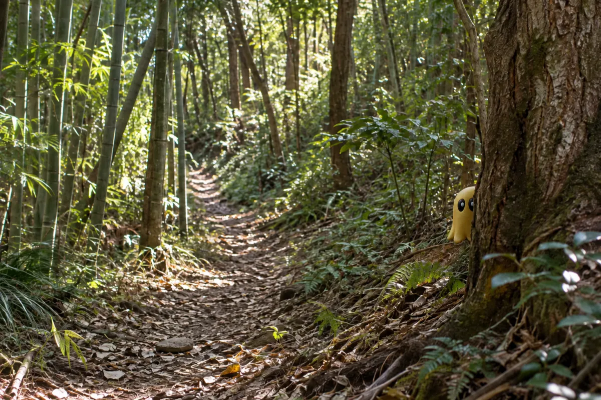
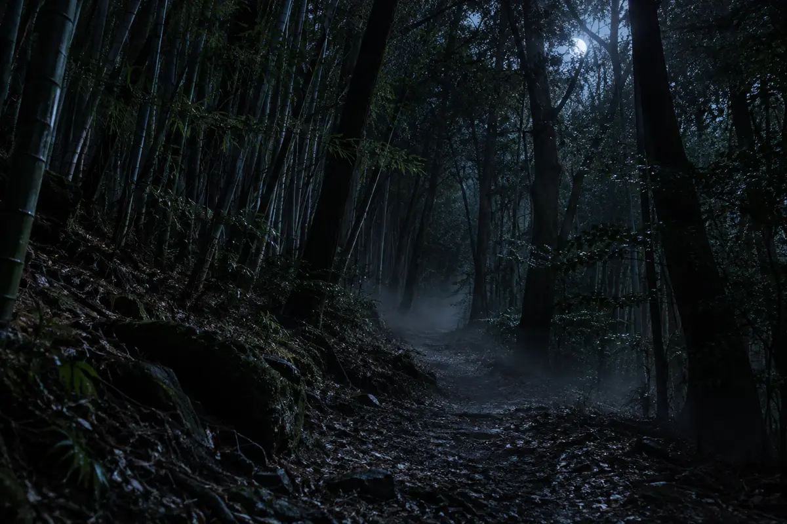
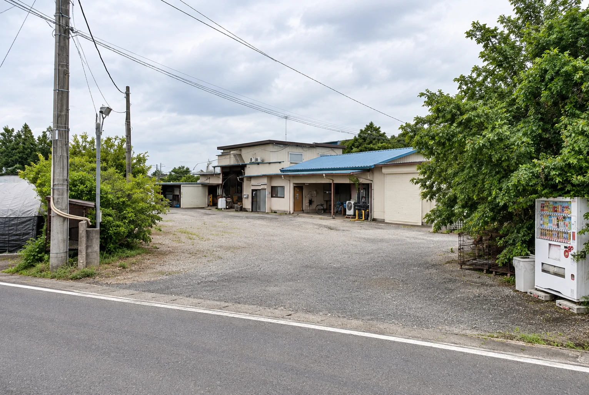
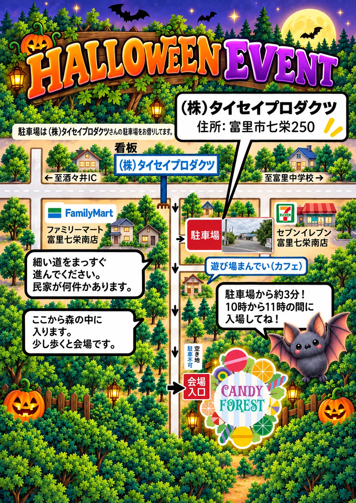
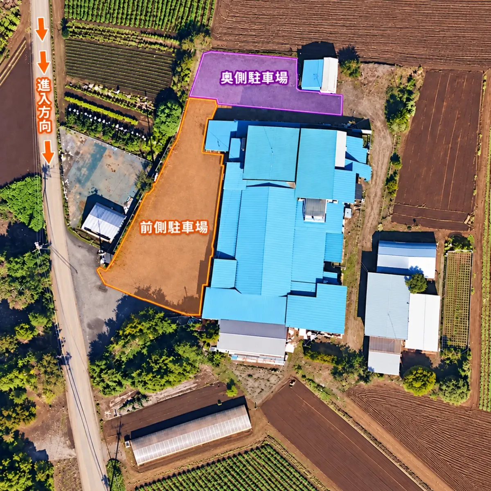
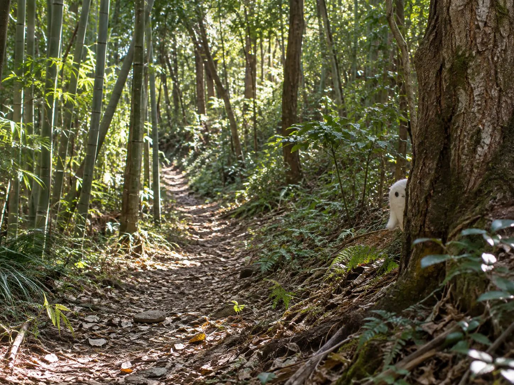
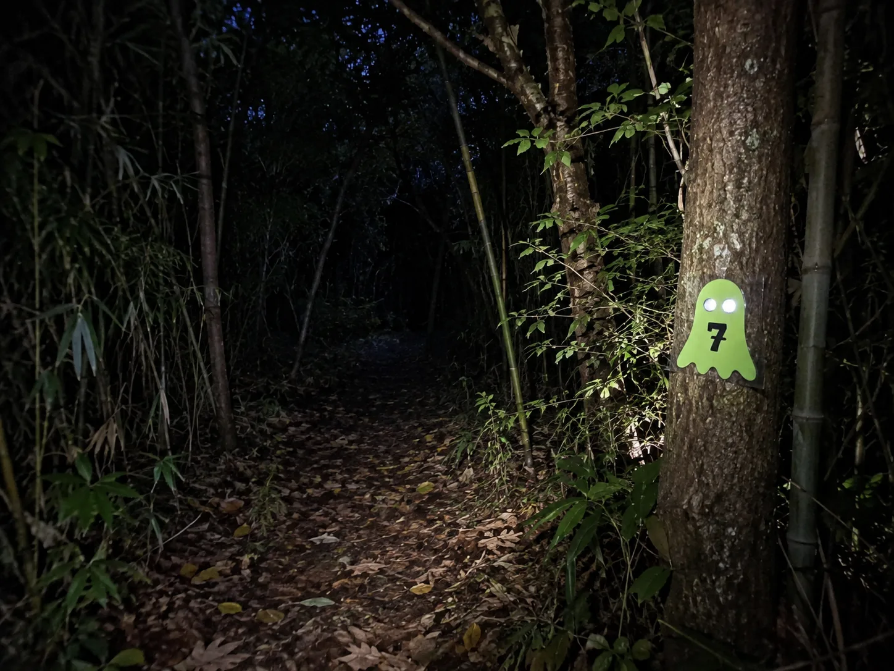

1グループに1台、電波の入るスマホが必要ですOne phone with mobile data per family or team
会場にWi-Fiはありません。キャンディの森とゾンビ・スカベンジャーハントで使います。充電してきてください。There is no Wi-Fi. You'll need it for both hunts — come fully charged.
10月31日（土）Saturday, October 31, 2026
THE HALLOWEEN EVENT 2026
昼はキャンディの森と午後のイベント、 夜はゾンビ・スカベンジャーハント！Candy Forest and Afternoon Events by day, the Zombie Scavenger Hunt at night!
キャンディの森 スタートまでCandy Forest opens in
まずは予約Start here
ブライアン英会話教室にメールでご予約ください。Reserve by emailing Bryan's English School.
キャンディの森とゾンビ・スカベンジャーハントは、どちらか一つでも両方でも参加できます。Choose Candy Forest, the Zombie Scavenger Hunt, or both.
大人は入場無料です。未就学児・小学生は、保護者の同伴が必要です。Admission is free for adults in your family or group. Preschool and elementary-age children must be accompanied by a parent or guardian.
参加するお子さま1人につき、参加するイベントのバッグを1つご購入ください。キャンディの森に参加する場合はキャンディバッグ、ゾンビ・スカベンジャーハントに参加する場合はグッズバッグです。Each participating student must purchase one bag for the event they attend: a Candy Bag for Candy Forest or a Goodie Bag for the Zombie Hunt.
午後のイベントは、キャンディの森またはゾンビ・スカベンジャーハントに参加するご家族が対象です。Afternoon Events are for families joining Candy Forest or the Zombie Scavenger Hunt.
バッグは予約した方のみ・お申し込みは10月23日（金）までBags for reserved families only — orders close Friday, Oct 23
メールで予約するReserve by emailbryans.english@gmail.com
会場にWi-Fiはありません。キャンディの森とゾンビ・スカベンジャーハントで使います。充電してきてください。There is no Wi-Fi. You'll need it for both hunts — come fully charged.
子どもは仮装で参加してください。保護者の仮装は自由です。夜のゾンビ・スカベンジャーハントは仮装不要です。Children must wear costumes for the Candy Forest. Optional for parents. No costumes needed for the night-time Zombie Scavenger Hunt.
徒歩約10分の場所にファミリーマートがあります。There is a FamilyMart about a 10-minute walk away.
1日の予定The day at a glance
キャンディの森とゾンビ・スカベンジャーハントは、どちらか一つでも両方でも参加できます。午後のイベントは、どちらかに参加するご家族が対象です。Join Candy Forest, the Zombie Scavenger Hunt, or both. Afternoon Events are for families joining either.

森にかくれた12ひきのブーハーゴーストをさがそう。受付は11:00まで。仮装必須。Find twelve hidden Booha Ghosts in the forest. Last check-in 11:00. Costumes required.
キャンディバッグ ¥1,000お弁当を持ってきて、ストーリータイム、ハロウィンペインティング、魔女の材料さがし、森のモンスターづくり、自由あそびを楽しみましょう。地面に座るので、レジャーシートをお持ちください。Bring your own lunch and enjoy Story Time, Halloween Painting, the Witch's Ingredient Hunt, Build a Forest Monster, and Free Play. Please bring a picnic sheet for sitting on the ground.

暗い森でゴーストをさがせ。サイレンが鳴ったらかくれろ！Find the ghosts in the dark forest. When the siren sounds — hide!
18:00までにホスピタルデスクで受付。仮装は不要です。Check in at the Hospital Desk by 6:00 pm. No costumes needed.
グッズバッグ ¥1,000料金Prices
子ども1人あたり・両方で¥2,000・大人は無料Per participating child · both ¥2,000 · adults free
バッグのお申し込みは10月23日（金）まで。イベントが中止になった場合もバッグはお渡しします。返金はありません。Bag orders close Friday, October 23. If the event is cancelled, your bags will still be available. No refunds.
時間Timeline
駐車場オープンParking opens
キャンディの森スタートCandy Forest starts
キャンディの森 最終受付Last Candy Forest check-in
キャンディの森おわり・午後のイベントCandy Forest ends · Afternoon Events begin
午後のイベントおわりAfternoon Events end
ゾンビ・スカベンジャーハント（18:00までに受付）Zombie Scavenger Hunt — check in by 6:00 pm
準備
会場への行き方
駐車場から森の入口まで徒歩約3分About a three-minute walk from parking to the forest entrance.
目印：ファミリーマート富里七栄南店、セブンイレブン富里七栄南店Landmarks: FamilyMart Tomisato Nanae-Minami, 7-Eleven Tomisato Nanae-Minami
Googleマップで見るOpen Google Maps


お問い合わせContact
ブライアン英会話教室Bryan's English School
さがす・スキャン・ごほうび・つぎのゴーストFind · Scan · Reward · Next Target
森の中にかくれている、12色のブーハーゴーストをさがします。家族ごとに色の順番が異なり、同じ順番はありません。今のターゲットの色だけを探してください。受付は10:00〜11:00、キャンディの森は12:00までです。子どもは仮装で参加してください。Find 12 colored Booha Ghosts hidden in the real forest. Each family receives a different color order, and no two families have the same order. Search only for the color shown as your current target. Check in 10:00–11:00. The Candy Forest ends at 12:00. Children must wear costumes.
ハントは日本時間10:00に始まります。The hunt opens at 10:00 Japan/Tokyo time.

かぞくのハントYour family hunt
家族またはチーム名を入力してください。この端末だけに保存され、12色の順番が作られます。Choose a family or team name. It stays on this device only. The site will create your private 12-color order when you start.
いまFacebookやLINEなどのアプリの中で開いています。カメラや記録がうまく動かないことがあるので、メニューから「ブラウザで開く」を選んで、SafariかChromeで開いてください。You're inside an app like Facebook or LINE. The camera and your saved hunt may not work here. Use the menu to open this page in Safari or Chrome.
新しいハントは10:00から11:00までに始めてください。キャンディの森は12:00までです。New hunts must start between 10:00 and 11:00. The Candy Forest ends at 12:00.
ハントのとちゅうですYour hunt is in progress
0 / 12午後のイベントAfternoon Events
キャンディの森、ゾンビ・スカベンジャーハント、または両方に参加するご家族向けです。ここでは午後のイベントの大まかな内容をご案内します。These activities are for families participating in the Candy Forest, the Zombie Scavenger Hunt, or both. This page gives a general idea of what to expect.
お昼ごはんの後は、次のイベントを予定しています。After lunch, we plan to offer:
あいことばは、当日ブライアンが発表します。Bryan will announce the password on the day.
12:00〜16:0012:00–4:00 pm
ゾンビ・スカベンジャーハントZombie Scavenger Hunt
ライムグリーンのゴースト15ひき。暗い森。サイレン。ゾンビ。QRコードはありません。Fifteen lime-green ghosts. A dark forest. A siren. Zombies. No QR codes.
18:00スタート・18:00までに受付Starts 6:00 pm — check in by 6:00 pm
グッズバッグ ¥1,000Goodie bag ¥1,000
小学生〜高校生（未就学児は参加不可）・小学生は大人の同伴が必要Elementary to high school; no preschoolers. Elementary-age students must be accompanied by an adult.

チームごとに、ゴースト1〜15をさがす順番がちがいます。見つけたら、ゲーム画面でそのゴーストのマークをえらびます。正しいと、ひみつのことばが1文字ずつわかります。まちがえると、その番号はリストの最後にまわります。Every team gets its own order for Ghosts 1 to 15. When you find one, choose its mark on the game screen. A correct mark reveals one letter of a secret phrase. A wrong mark sends that number to the end of your list.
スマホのライトや懐中電灯は使えません。ゲーム画面の「ライト」ボタンをおすと、画面があやしい色に光ります。森にむけて、ゴーストの光る目をさがしてください。スマホの明るさは最大にしてください。No phone flashlights or torches. Tap the game's Light button and the screen glows in eerie colors. Point it at the forest and look for the ghosts' shining eyes. Please turn your screen brightness all the way up.
サイレンが鳴ったら、全員かくれてください。かくれていれば安全です。ゾンビがつかむことはありません。かくれていない人や、光が見えた人は、ゾンビに洗濯ばさみをつけられます。When the siren sounds, everyone hides. Anyone who hides is safe. Zombies never grab anyone. Anyone not hiding, or showing a light, may get a clothespin clipped on by a zombie.
洗濯ばさみをつけられたら、チーム全員で病院（ホスピタルデスク）へ戻り、外してもらいます。チーム用の光る薬を受け取って再スタート。15番を見つけたら、病院に戻ってゴールです。If anyone gets a clothespin, the whole team returns to the Hospital Desk to have it removed and collect a glowing team medicine, then carries on. After Ghost 15, return to the Hospital Desk to finish.
チームのハントYour team hunt
チームリーダーのスマホ1台で遊びます。チーム名はこのスマホだけに保存されます。One phone per team (the team leader's). The team name stays on this phone only.
18:00から始められます。スマホの明るさは最大にしてください。Opens at 6:00 pm. Please turn your screen brightness all the way up.
ハントのとちゅうですYour hunt is in progress
0 / 15画面の色のゴーストを森でさがそう。
Find the ghost with the color on your screen.「スキャン」をおして、QRコードを読みとろう。
Tap Scan and point the camera at the QR code.ゴーストをタップしてつかまえよう！全部で12ひき。
Tap the ghost to catch it. Catch all 12!キャンディの森のページでチームの名前を入れてスタートしてから、もう一度QRコードを読んでね。Enter your team name on the Candy Forest page and press Start, then scan the QR code again.
テストモードだけのボタンです。色をタップするとQRコードを読んだのと同じになります。
Test mode only. Tapping a color works the same as scanning that ghost's QR code.
ジョーカー（テスト） / Jokers (test)
1. 「スキャン」をおして、カメラを「許可」してください。QRコードを白いわくに入れると読めます。Tap Scan and allow the camera. Fit the QR code inside the white frame.
2. FacebookやLINEのアプリの中では、カメラが使えないことがあります。メニューから「ブラウザで開く」を選んでください。Inside the Facebook or LINE app the camera may not work. Use the menu to open this page in your browser.
3. 読んだURLをここに貼りつけてもOK。Or paste the scanned link here.
それでもダメなら、近くのスタッフに声をかけてね。Still stuck? Ask a staff member.
いまさがすゴーストNow searching for
ひみつのことばSecret phrase
にげきった！You escaped!
ひみつのことばSecret phrase
ホスピタルデスクで、このことばを言ってね！Say this phrase at the Hospital Desk to finish.